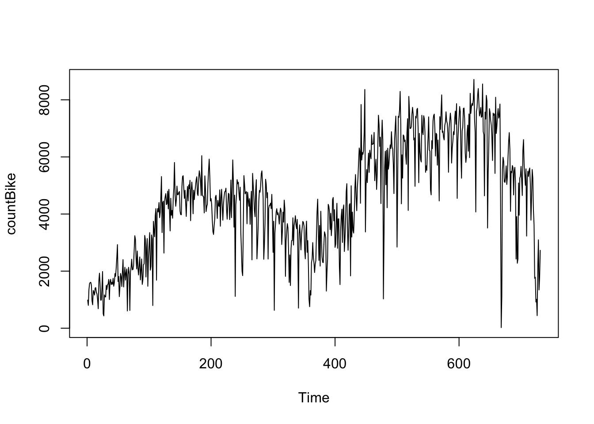
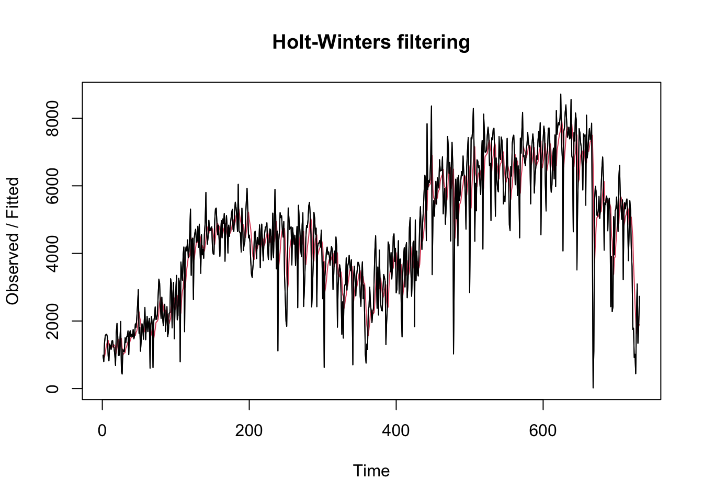
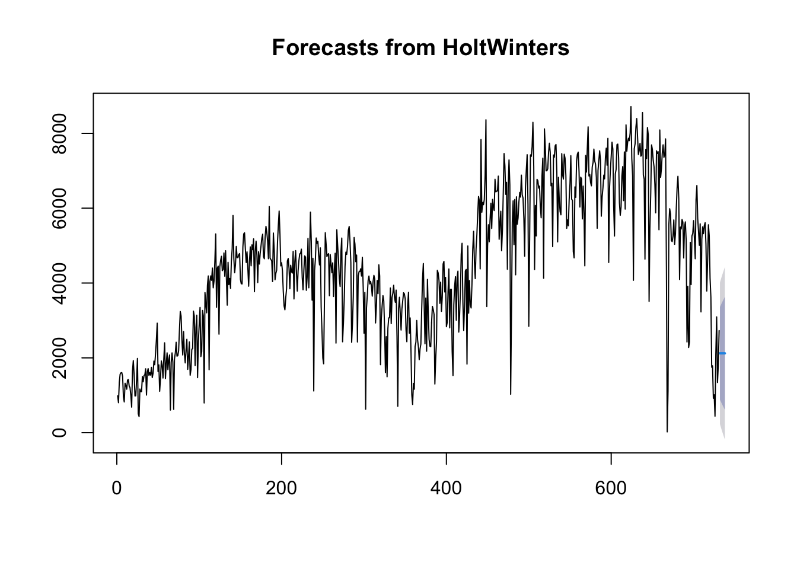

Údaje môžete načítať do R pomocou funkcie read.csv(), ktorá predpokladá, že vaše údaje sú po sebe idúce časové body v jednoduchom textovom súbore s jedným stĺpcom. Keď načítate údaje časových radov do R, ďalším krokom je uloženie údajov do objektu časových radov v R, aby ste mohli použiť mnohé funkcie R na analýzu údajov časových radov. Na uloženie údajov do objektu časového radu používame funkciu ts() v R. Napríklad na uloženie údajov do premennej ‘bike’ ako objektu časového radu v R napíšeme:
library(tseries)
Registered S3 method overwritten by 'quantmod':
method from
as.zoo.data.frame zoo
Prvá vec, ktorú budete chcieť urobiť pri analýze údajov časových radov, bude načítať ich do R a vykresliť časový rad.
plot.ts(countBike)

2.1 Jednoduché exponenciálne vyrovnávanie
Ak máte časový rad, ktorý možno opísať pomocou aditívneho modelu s konštantnou úrovňou a bez sezónnosti, môžete použiť jednoduché exponenciálne vyhladzovanie na vytváranie krátkodobých predpovedí.
Jednoduchá metóda exponenciálneho vyhladzovania poskytuje spôsob odhadu úrovne v aktuálnom časovom bode. Vyhladzovanie je riadené parametrom alfa; pre odhad úrovne v aktuálnom časovom bode. hodnota alfa; leží medzi 0 a 1. Hodnoty alfa, ktoré sú blízke 0, znamenajú, že pri predpovediach budúcich hodnôt sa prikladá malá váha najnovším pozorovaniam.
Na vytváranie predpovedí pomocou jednoduchého exponenciálneho vyhladzovania v jazyku R môžeme použiť jednoduchý prediktívny model exponenciálneho vyhladzovania pomocou funkcie „HoltWinters()“ v jazyku R. Ak chcete použiť HoltWinters() na jednoduché exponenciálne vyhladzovanie, musíme nastaviť parametre beta=FALSE a gamma=FALSE vo funkcii HoltWinters() (parametre beta a gama sa používajú na Holtovo exponenciálne vyhladzovanie alebo Holt-Wintersovo exponenciálne vyhladzovanie, ako je popísané nižšie). Alfa je “základná hodnota”. Vyššie alfa prikladá väčšiu váhu najnovším pozorovaniam. Beta je “trendová hodnota”. Vyššia beta znamená, že sklon trendu je viac závislý od posledných sklonov trendu. Gama je “sezónna zložka”. Vyššia gama dáva väčšiu váhu najnovším sezónnym cyklom.
Funkcia HoltWinters() vracia premennú zoznamu, ktorá obsahuje niekoľko pomenovaných prvkov.
Napríklad, ak chcete použiť jednoduché exponenciálne vyhladzovanie na vytváranie predpovedí pre časový rad počtu požičaných bicyklov za deň, napíšeme:
Výstup HoltWinters() nám hovorí, že odhadovaná hodnota parametra alfa je približne 0.28. To je celkom ďalje od nuly, čo nám hovorí, že predpovede sú založené na nedávnych pozorovaniach.
Vo vyššie uvedenom príklade sme uložili výstup funkcie HoltWinters() do premennej zoznamu „countBikeHW“. Prognózy vytvorené HoltWinters() sú uložené v pomenovanom objekte tejto premennej listu pod názvom „fitted“, takže ich hodnoty môžeme získať zadaním:
Pôvodný časový rad môžeme vykresliť oproti expoeneciálnemu vyrovnávanémuu radu zadaním:
plot(countBikeHW)lines(countBike)

countBikeHW$SSE
[1] 680114835
Graf zobrazuje pôvodný časový rad čiernou farbou a prognózy ako červenou čiaru. Časový rad predpovedí je oveľa plynulejší ako časový rad pôvodných údajov.
Ako mieru presnosti prognóz môžeme použiť súčet štvorcov chýb pre chyby prognóz vo vzorke, t. j. chyby prognóz za časové obdobie, ktoré pokrýva náš pôvodný časový rad. Suma štvorcov chýb je uložená v pomenovanom prvku premennej zoznamu “countBikeHW” s názvom “SSE”, takže jej hodnotu môžeme získať zadaním “countBikeHW$SSE”. Súčet štvorcov chýb je dosť vysoký.
2.2 Holt Winters prognózovanie
Pri jednoduchom exponenciálnom vyhladzovaní je bežné použiť prvú hodnotu v časovom rade ako počiatočnú hodnotu pre úroveň. Napríklad v časovom rade pre požičané bicykle je prvá dňová hodnota 985 sledovaného dvojročného obdobia. Počiatočnú hodnotu pre úroveň môžete určiť vo funkcii HoltWinters() pomocou parametra “l.start”. Ak chceme napríklad vytvoriť predpoveď s počiatočnou hodnotou hladiny nastavenou na 985, zadáme:
Holt-Winters exponential smoothing without trend and without seasonal component.
Call:
HoltWinters(x = countBike, beta = FALSE, gamma = FALSE, l.start = 985)
Smoothing parameters:
alpha: 0.2839781
beta : FALSE
gamma: FALSE
Coefficients:
[,1]
a 2121.331
Ako bolo vysvetlené vyššie, v predvolenom nastavení HoltWinters() sa predpovede vytvárajú len pre časové obdobie, ktoré pokrývajú pôvodné údaje, čo je v prípade časového radu pre požičané bicykle obdobie dvoch seldovaných rokov. Predpovede pre ďalšie časové body môžeme vytvoriť pomocou funkcie “forecast.HoltWinters()” v balíku R “forecast”. Ak chceme použiť funkciu forecast.HoltWinters(), musíme si najprv nainštalovať balík R “forecast”.
Pri použití funkcie forecast.HoltWinters() jej ako prvý argument (vstup) odovzdáte predikčný model, ktorý ste už zostavili pomocou funkcie HoltWinters(). Napríklad v prípade časového radu pre požičané bicykle sme predikčný model vytvorený pomocou funkcie HoltWinters() uložili do premennej “countBikeHW”. Pomocou parametra “h” vo funkcii forecast.HoltWinters() určíte, pre koľko ďalších časových bodov chcete vytvoriť prognózy. Napríklad, ak chceme vytvoriť predpoveď požičané bicykle na ďalšie dni (ďalších 7 dní) pomocou funkcie forecast.HoltWinters(), zadáme:
Funkcia forecast.HoltWinters() vám poskytne predpoveď pre daný deň, 80% interval predpovede pre predpoveď a 95% interval predpovede pre predpoveď. Napríklad predpovedané dňové požičanie bicyklov na 732 deň je približne 2121 s 95 % intervalom predpovede (228, 4014).
Na vykreslenie predpovedí vykonaných funkciou forecast.HoltWinters() môžeme použiť funkciu “plot.forecast()”:
forecast:::plot.forecast(countBikeHWforecast)

forecast:::plot.forecast(countBikeHWforecast)
Predpovede na 7 dní sú tu znázornené modrou čiarou, 80 % interval predpovedí viac tmavším sivým tieňom a 95 % interval predpovedí beldším sivým tieňom.
2.2.1 Holt Winters prognózovanie s odstránenou trendovou zložkou
Predpoveď časového radu požičiavania bicyklov v prípade, že povôdný rad vyhladíme 30 dňovým jednoduchým kĺzavým priemerom:
Time Series:
Start = 724
End = 731
Frequency = 1
[1] 920 1013 441 2114 3095 1341 1796 2729
subset(countBikeSMA30, start=724)
Time Series:
Start = 724
End = 731
Frequency = 1
[1] 4630.167 4583.133 4428.267 4366.767 4294.600 4161.867 4032.800 3950.733
Potom od pôvodných hodnôt časového radu uložených v premennej “countBike” odpočítame hodnoty kĺzavého priemeru uložených v premennej “countBikeSMA30” a dostaneme nový časový rad z pôvodného, ktorý bol očistený od trendovej zložky a je uložený v premennej “countBikeNoTrend”. Nový časový trend náhodne kolíše okolo hodnoty 0, čo znamená kolísanie hodnôt okolo trendu teda hodnôt jednoduchého kĺzavého priemeru.
2.2.2 Holt Winters prognózovanie s Box Cox transformáciou dát
Na pôvodný časový rad požičaných biczklov uplatníme BoxCos transformáciu, kde uvažujeme lambdu=0, čo v skotočnosti je logaritmická transformácia dát a vieme, že časový rad je nazáporný a všetky hodnoty sú rôzne od nuly, potom môžme uplatniť danú transformáciu.
Chyby prognózy sa vypočítajú ako pozorované hodnoty mínus predpovedané hodnoty pre každý časový bod. Chyby predpovede môžeme vypočítať len pre časové obdobie, ktoré pokrýva náš pôvodný časový rad. Ako už bolo uvedené, jedným z meradiel presnosti predpovedného modelu je súčet štvorcov chýb (SSE) pre chyby predpovede vo vzorke.
Chyby predpovede vo vzorke sú uložené v pomenovanom prvku “residuals” premennej zoznamu vrátenej funkciou forecast.HoltWinters(). Ak sa predpovedný model nedá zlepšiť, nemali by existovať žiadne korelácie medzi chybami predpovede pre po sebe nasledujúce predpovede. Inými slovami, ak existujú korelácie medzi chybami predpovedí pre po sebe nasledujúce predpovede, je pravdepodobné, že jednoduché predpovede s exponenciálnym vyhladzovaním by sa dali zlepšiť inou predpovednou technikou.
Aby sme zistili, či je to tak, môžeme získať korelogram chýb prognóz vo vzorke pre oneskorenia 1-20. Korelogram chýb prognózy môžeme vypočítať pomocou funkcie “acf()” v jazyku R. Na určenie maximálneho oneskorenia, na ktoré sa chceme pozrieť, použijeme parameter “lag.max” v funkcii acf().
Napríklad na výpočet korelogramu chýb predpovede vo vzorke pre dňové údaje požičiavania bicyklov pre oneskorenia 1-20 zadáme:
Z korelogramu vzorky vidíte, že autokorelácia pri oneskorení 1 a 3 presahuje hranice významnosti. Ak chceme otestovať, či existuje významný dôkaz nenulovej korelácie pri oneskoreniach 1 až 20, môžeme vykonať Ljung-Boxov test. To sa dá urobiť v programe R pomocou funkcie “Box.test()”. Maximálne oneskorenie, na ktoré sa chceme pozrieť, sa špecifikuje pomocou parametra “lag” vo funkcii Box.test(). Napríklad, ak chceme otestovať, či existujú nenulové autokorelácie pri oneskoreniach 1-20, pre chyby predpovede vo vzorke požičaných bicyklov zadáme:
V tomto prípade je Ljung-Boxova testovacia štatistika 98,84 a p-hodnota je 2.03e-12, takže existuje dôkaz nenulovej autokorelácie v chybách prognózy vo vzorke s oneskorením 1-20.
Aby sme si boli istí, že prognostický model nemožno zlepšiť, je tiež dobré skontrolovať, či sú chyby prognózy normálne rozdelené so strednou hodnotou nula a konštantným rozptylom. Na overenie, či chyby prognózy majú konštantný rozptyl, môžeme urobiť časový graf chýb prognózy vo vzorke:
Z grafu vyplýva, že chyby predpovedí vo vzorke majú v čase zrejme približne konštantný rozptyl, hoci veľkosť výkyvov na začiatku časového radu môže byť o niečo menšia ako v neskorších obdobiach.
Na overenie, či sú chyby predpovedí normálne rozdelené so strednou hodnotou nula, môžeme vykresliť histogram chýb predpovedí s prekrytou normálnou krivkou, ktorá má strednú hodnotu nula a rovnakú štandardnú odchýlku ako rozdelenie chýb predpovedí. Na tento účel môžeme definovať funkciu R “plotForecastErrors()”, ktorá je uvedená nižšie:
plotForecastErrors <-function(forecasterrors) {# histogram rezidui: mybinsize <-IQR(forecasterrors)/4 mysd <-sd(forecasterrors) mymin <-min(forecasterrors) - mysd*5 mymax <-max(forecasterrors) + mysd*3# generované štandardné normálne dáta s 0 priemerom a std 1 mynorm <-rnorm(10000, mean=0, sd=mysd) mymin2 <-min(mynorm) mymax2 <-max(mynorm)if (mymin2 < mymin) { mymin <- mymin2 }if (mymax2 > mymax) { mymax <- mymax2 }# červen sú reziduá a modrým sú normálne rozdelené dáta mybins <-seq(mymin, mymax, mybinsize)hist(forecasterrors, col="red", freq=FALSE, breaks=mybins)# freq=FALSE zaistí, že obsah pod histogramom bude rovný 1 myhist <-hist(mynorm, plot=FALSE, breaks=mybins)points(myhist$mids, myhist$density, type="l", col="blue", lwd=2)}plotForecastErrors(subset(countBikeHWforecast$residuals,start=2))
Shapiro-Wilk normality test
data: subset(countBikeHWforecast$residuals, start = 2)
W = 0.90756, p-value < 2.2e-16
Z grafu vyplýva, že rozdelenie chýb predpovede je približne v strede nuly a je viac-menej normálne rozložené, hoci sa zdá, že v porovnaní s normálnou krivkou je mierne vychýlené doprava. Pravé skreslenie je však relatívne malé, a preto je pravdepodobné, že chyby predpovede sú normálne rozdelené so strednou hodnotou nula.
Ljungov-Boxov test ukázal, že v chybách prognózy vo vzorke existuje dôkaz nenulovej autokorelácie a zdá sa, že rozdelenie chýb prognózy je normálne rozdelené so strednou hodnotou nula. Výsledky naznačujú, že jednoduchá metóda exponenciálneho vyhladzovania neposkytuje primeraný predpovedný model pre požičiavanie bicyklov, ktorý pravdepodobne vieme inými metódami zlepšiť.
Predpoklad ,že v chybách predpovede neexistujú autokorelácie, na ktorej boli založené 80 % a 95 % intervaly predpovedí sú neplatné. Prepoklad normality máme len graficky zatiaľ oevrenú a mali bz sme použiť test normality. Sahpiro=Wilk normality test ukázal, že dáta nie sú normlané rozdelené. Preto musíme otestovať stacionaritu radu a použiť ine nástroje časových raodv na určenie predpovede.